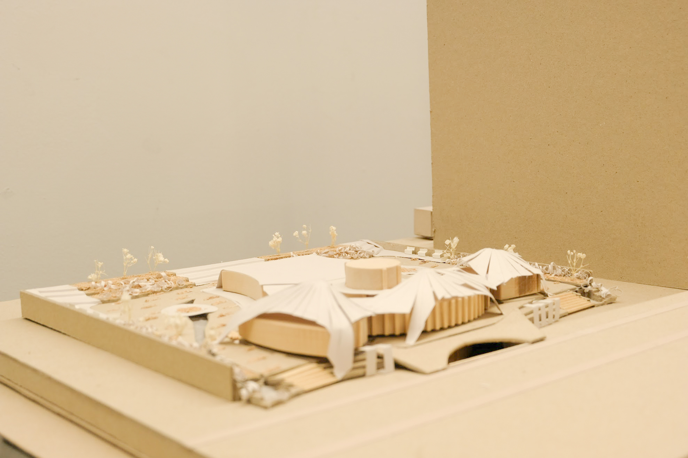
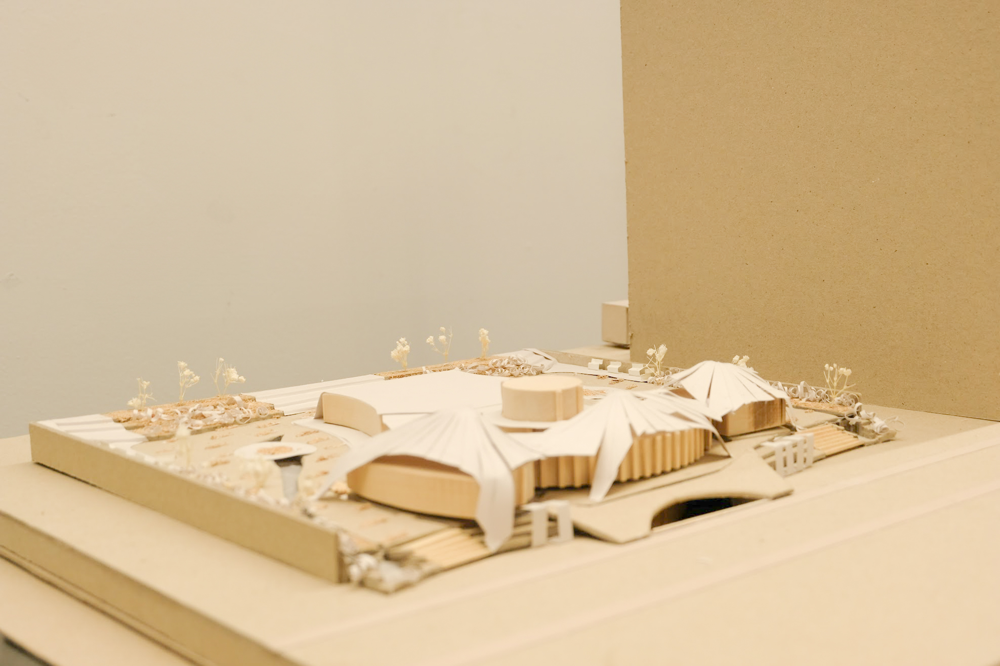
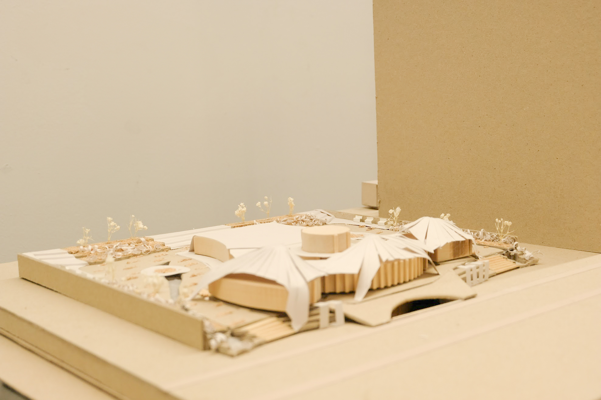
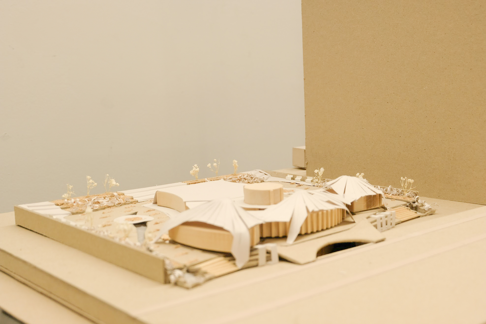

Through inspiration from Parkdale’s lobby meetings, our aim is to design a community center which acts as a living core for convergence and a catalyst for connection, naturally attracting people into the building.
At its heart, this centre will act as a “magnet” for belonging, which unify a community. This community center will go beyond as simply a destination for meetings and working but will become an anchor for an ever-evolving ecosystem of social vibrancy, focusing on attracting people into a central social core.
Convergence of punctuated spaces into a social core advocates transformation and change. The central magnet of the building will draw and attract people in for a sense of inclusivity, warmth and shared identity while symmetry incorporates balance and harmony, subconsciously signaling equality and unity. It becomes a powerful tool for reinforcing “magnet of belonging” metaphorically and structurally.
This structure evokes a social response to the community. Through different spaces and materiality, it aims to become a transformative and sensorial space which adapts to changes for various social interactions.
 


 
